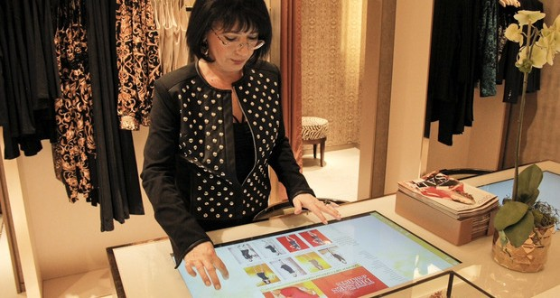

本文译自福布斯杂志2014年一篇关于全渠道零售的采访，原文在An Omni-Channel Pioneer Explains His Methods
全渠道零售（Omni-channel Retailing）指在多种销售渠道上建立无缝连接的客户体验，这些渠道包括：实体店面、智能手机、平板电脑、个人电脑、邮件、目录等。许多零售商都把全渠道作为实现其数字战略的重要机会。由于目前可供客户选择的渠道极为丰富，使用场景也变得极为多变，零售商需要在客户体验的整体角度上思考其全渠道零售的实施。
FAS是Chico旗下价值26亿美元的休闲类女装品牌，其首席信息官Eric Singleton是其「数字剧场计划（Digital Retail Theater）」背后的掌门人。之所以选用「Theater」一词，是希望FAS品牌能够带给其女性消费者一种生活剧场的感受，把生活方式的理念，通过创新的全渠道体验，植入每位客户，正如艺术和音乐在剧场中打动人心一般。Singleton先生作为CIO，正在领导者FAS品牌从上自下的创新，而CIO作为客户体验创新的领导者，也正成为零售业的趋势。
本文节选自福布斯杂志记者Peter High与Eric Singleton的采访内容。
Peter High : 最近您宣布了Chico's全渠道创新的「数字剧场计划」，能向我们多透露一些这一计划的细节吗？
Eric Singleton : 所有人都在谈「全渠道」，一年半以前我们尝试重新定义「到底什么是全渠道」。我们的注意力已经从技术和科技转移到了消费者行为的变化，我们的消费者有了更多选择，也更加强大，这不是因为科技变得更酷了，而是这就是人们的真实生活。
这就是我们重新定义「全渠道」的基础。我们尝试从一位典型客户的生活出发，从早上醒来到晚上睡觉，我们分析了她一整天的生活、每个节点发生的事，然后尝试用我们能够提供的服务把它们关联起来，思考她在什么样的终端上，需要什么内容、什么信息、什么交互方式，这就是「数字剧场计划」的基础，这是一场没有开始，也没有结束的生活戏。
Peter High : 明显这个计划已经把线上线下整合在了一起。我觉得很多零售商犯的一个错误是把「全渠道」当成在渠道之间「复制客户体验」而不去思考客户在每个渠道上的特殊性，比如客户在家和在店里的使用场景就完全不一样。在这一点上Chico是如何考虑的？
Eric Singleton : 你确实说到了点子上，线上下的那条线应该被模糊化，就像我之前说，这个体验没有开始、也没有结束。你应该思考是，作为一个品牌，如何做到当客户在任何时候、任何地点需要你的时候，你都能提供服务，这时候，客户最终购买的可能性是最大的。
但是模糊这条线最难的地方是我们无法找到每一个可能的交互和时刻，因为你无法预测客户的行为、也很难模式化。我们需要去寻找的，是那些客户最自然的需要，以及我们的位置，找到价值的匹配，让他们觉得我们是他们生活方式的一部分。我们的Tech Tables（下图）就希望扮演这样的角色，Tech Tables所匹配的场景是顾客在店里的社交需要，要么是老朋友、要么是新朋友，这种需要是没有起始点的，它植入在整个购物过程中。因此Tech Tables现在以及成为了我们店内的一个社交中心，顾客们把包放在上面，聊着屏幕上出现的各种单品。看到这个场景你会觉得很有趣，顾客的行为模式被一个渠道所引导和强化，而在以前这个是很难想象的。

Peter High : 我知道那些设置了Tech Table店经营表现更好，我很好奇背后原因的原因是什么。
Eric Singleton : 我必须说结果比预想的还要好。最开始的想法是把科技引入到购物环境当中来，而又不要那么明显开始和结束的过程，比如先浏览、最后结账。我们想模拟真实的生活场景，在生活中你和科技的关系就是融汇在一起的，在家里你不会突然进入一个「科技模式」，完成目标之后再进入一个「生活模式」，这些行为都是没有起始点的，是无处不在的。科技应该被融入整个体验里，而不是独立。在店里你可能不会随手拿着你的手机，你会把它放进你的手包里。同时技术让帮助我们完成更多关于人的体验，我们的销售会马上识别你，提供给你更人性化的体验，因为整个CRM（客户关系管理系统）和Tech Table完全整合在了一起。
现在来看，Tech Table有两个重要的特点，第一个是「社交效应」，另一个是「60%库存」，这两点的集合大大提升了客户的购买体验。首先，装备Tech Table的店不需要保持100%的库存、而可以降低到60%，因为Tech Table本身就可以实现100%库存的作用，这样做帮助我们大大节省了空间和成本。Tech Table的位置也体现了社交性，它一般摆在试衣间附近，那里聚集了很多试衣服的女士和销售人员，互相讨论比对不同单品。销售额因此大概增加了大概15%到20%，确实很惊人。
Peter High : 你们是如何收集顾客的想法的？有没有把他们召集在一起了解他们的科技习惯？有没有测试这个想法？整个过程是怎样的？
Eric Singleton : 我们做了很多前期的调研确定「数字剧场计划」是不是一个可行的想法。前期我们做了很多像创业公司那样的工作，比如了解、分析和观察顾客现在的行为。
同时我们建立了一些指标来了解这些新科技在店内的表现，包括Tech Tables，数字杂志等等，这些指标很快在上线后起到了作用。另一方面我们让我们的销售人员做了很多店内的调查、帮助我们了解顾客对这些新科技的感受。
此外，我们有一个超过9年的客户关系管理数据库，我们会使用诸如Google的BigQuery这样的工具进行分析。
Peter High : 您说的这些似乎超过了传统我们对CIO的认识，您很了解您的顾客，而不仅仅只是后台的运营技术。您是如何看待以客户为中心的技术是如何演变CIO这个职位的？
Eric Singleton : 我想这样的讨论在业内很广泛。从我个人而言，探索、实现、和应用与顾客更加丰富的交互技术已经成为我职责的核心部分。25年前，谁是IT的客户？你可以说你所做的这些最终将影响所有人，但是以前你的客户依然来自企业内部，那些坐在工位上面对电脑的「自己人」。
CIO的职责依然和信息相关，幸运的是，我们这个时代因为技术的发展使得越来越多的人可以用越来越丰富的手段获得这些信息，这也使得软件的价值越来越高，而越来越多的平台也必然模糊了线上下的区别。
最后，业界许多人都在谈论首席信息官的更像是首席市场官，同时首席市场官又需要了解更多技术，这种融合就是趋势，而技术的发展又使得这种趋势真正发生，也是让我激动不已的地方。
Peter High : 您提到了您有一个非常全面的数据库。毫无疑问，在进行数字化技术的过程中您还会收集更多的信息。和顾客交互的过程中需要什么信息？在顾客关系里，您是如何确定这些信息的重要性的？
Eric Singleton : 两年前我来到Chico's的时候，看到我之前收集的数据，我就像收获了圣诞节礼物一样惊喜。数据就在盒子里，等着我去发现。
对于这些数据而言，我们大部分的关注点在购买历史、地理位置、时间、以及一年中一个数据点不同时间点的规律。现在我们在尝试一些更复杂的东西。我们把天气、位置、时间点、购买历史等等一系列的信息放在一个特定的店、平台、和区域的组合里进行分析。这些来自于CRM和其他云端数据源的信息，汇聚于一个非常动态模型中，帮助我们做出更加精细的决策。
Peter High : 可否谈谈您在保障这些数据安全上的职责？
Eric Singleton : 我们对于收集顾户数据非常小心，也持续向顾客保持充分的透明。我想这也是为什么我们能做到在POS端90%以上的采集率，这是高品牌信任度和销售人员和顾客良好互动的体现。
我想，零售业里的所有人，当前都把信息安全当成首要因素考虑，我不用过多陈述。在Chico's我们有一套极为严格和深入的信息安全体系。
过去的24个月里零售业在信息安全领域发生了很多事情，这对我们来说，是一个极好的学习机会，幸运的是同样的事情并没有发生在Chico's。我们在信息安全领域投入巨大，并会持续投入。
Peter High : 在这个计划中您是如何处理和其他合作伙伴的关系的？
Eric Singleton : 我们能走这么快当然离不开合作伙伴的帮助。我认为在这些合作关系里，最重要的是「合作开发」带来的效果。我们Google、还包括Apple，和一些定制化的技术公司进行合作。其中之一是位于纽约的Disco Systems公司，是他们帮助我们实现了最底层的服务基础架构系统——The Scale。我们有我们的自有团队，但是合作伙伴的引入确实保证了我们的交付。
Peter High : 您提到了虚拟现实是一个您特别感兴趣的技术，和否透露一下您关于虚拟现实的计划？
Eric Singleton : 重点是，我认为这些技术本身不是真正能改变格局的，而把它们整合起来才能产生惊人的力量，这也是「数字零售剧场计划」的核心所在，用更加丰富的客户体验融入客户在日常生活体验中。虚拟现实技术可能取代我们现在每20到30天发出一份的产品目录，同时给它们带来新的生命力。
例如，在目录中内置一个虚拟现实的应用，客户可以通过手机作为虚拟屏幕，用手势与内容，比如视频，进行互动，甚至完成更多操作，这样的体验是前所未有的。虚拟现实技术不单单只是弱化线上下的区别，甚至将体验深入到最基础的生活环境里。我们正在规划一些市场活动，推广这样有创意的体验给我们的客户。如果你把这些都联系在一起你会发现，虚拟现实技术确实把各种不同渠道、不同媒介上的信息整合在一起，这又回到了「数字零售剧场计划」的核心。我们对这一前景感到非常兴奋。
总结
本文有几个重要的知识点可以总结：
- 全渠道零售不是在不同渠道上复制和照搬现有体验；
- 客户的渠道选择越来越多，购物行为也变得复杂和不可预测，不再有端到端、固定在某个场景下的购物模式，线上和线下的界限必然模糊化；
- 全渠道零售的定位应该在「没有开始」也「没有结束」的情况下尽可能模拟顾客的真实生活场景，提供更丰富更有趣的交互方式；
- 新交互体验的设计应该考虑生活性、社会性、和社交性，建立人与人的联系，而不简单只是人与信息；
- 数据是寻找新设计机会的基础，建立各种不同数据间的联系，并多利用已有数据，但必须保证信息安全，和与客户及时告知数据采集的行为；
- 合作开发的模式可能是更快提升交付能力的路径之一；
- CIO的职责在与CMO融合，CIO需要更多接近终端顾客；
- 单个技术本身不能够决定格局变化，而将技术和数据整合在一起才能产生格局性的变化；
- 虚拟现实技术可能成为整合各种技术和数据的关键技术之一。